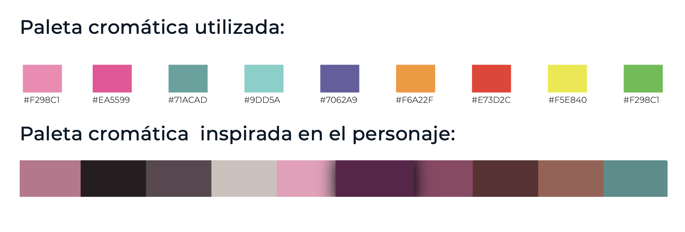

LOGO
Logo de la marca
Paleta cromática
Se utilizó colores inspirados en el personaje Bing Bong. Éste se caracteriza por el color rosa en diferentes tonalidades. El arcoiris, elemento utilizado en el logo de la marca, se eligió ya que se relaciona directamente con el personaje y con los niños. objeto de imaginación y diversión.
